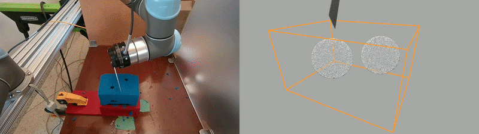
Real-world deformable testbed cutting and visualization

Chicken shoulder cutting
Overview
Automating chicken shoulder deboning requires precise 6-DoF cutting through a partially occluded, deformable, multi-material joint, since contact with the bones presents serious health and safety risks. Our work makes both systems-level and algorithmic contributions to train and deploy a reactive force-feedback cutting policy that dynamically adapts a nominal trajectory and enables full 6-DoF knife control to traverse the narrow joint gap while avoiding contact with the bones. First, we introduce an open-source custom-built simulator for multi-material cutting that models coupling, fracture, and cutting forces, and supports reinforcement learning, enabling efficient training and rapid prototyping. Second, we design a reusable physical testbed to emulate the chicken shoulder: two rigid "bone" spheres with controllable pose embedded in a softer block, enabling rigorous and repeatable evaluation while preserving essential multi-material characteristics of the target problem. Third, we train and deploy a residual RL policy, with discretized force observations and domain randomization, enabling robust zero-shot sim-to-real transfer and the first demonstration of a learned policy that debones a real chicken shoulder.
Contribution 1: Custom Simulator
custom-built open-source cutting simulator that supports fracturing and coupling of multiple deformable materials, as well as modeling of cutting force. Our simulator can be used to train the reactive cutting policy with Reinforcement Learning (RL).

Contribution 2: Physical Testbed
Design and implementation of a simplified reusable physical testbed for multi-material cutting, modeled after the chicken shoulder. Our testbed enables rigorous study and repeatable cutting experimentation in the real-world.
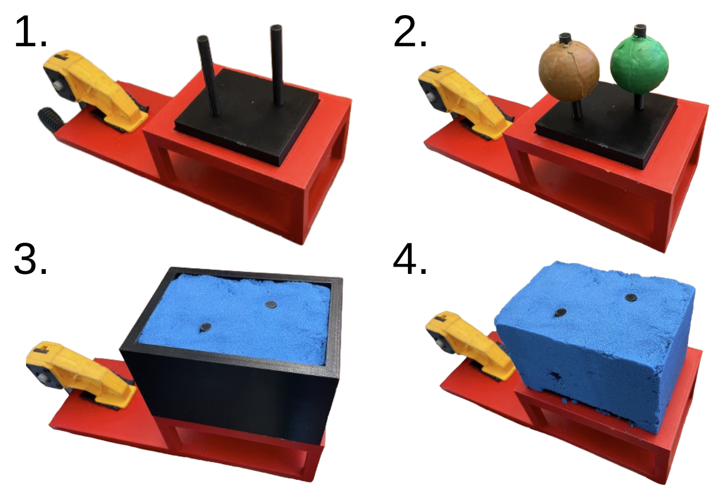
Contribution 3: Adaptive Cutting Policy
Design and training of dynamically adaptive 6 DoF cutting policy via RL-based residual policy training. Our policy can adapt to different cutting scenarios and materials in real-time. It transfers zero-shot to both our physical testbed and real chicken shoulders.
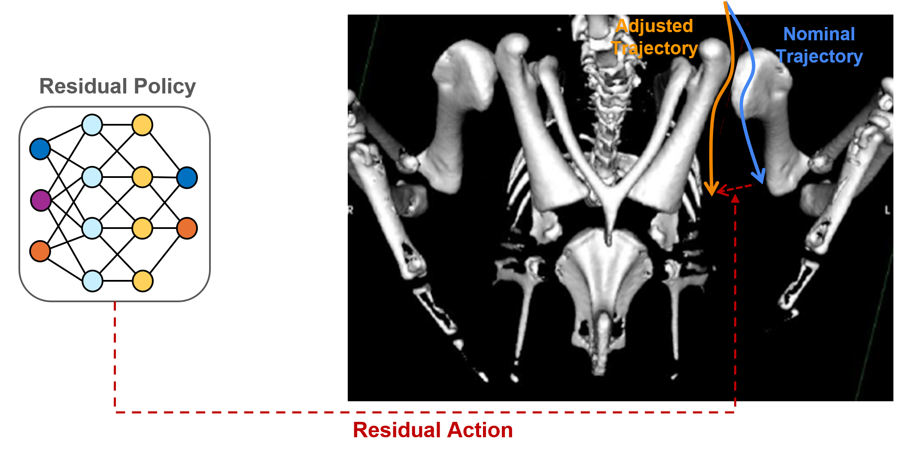
Results
Simulation Cutting
Nominal
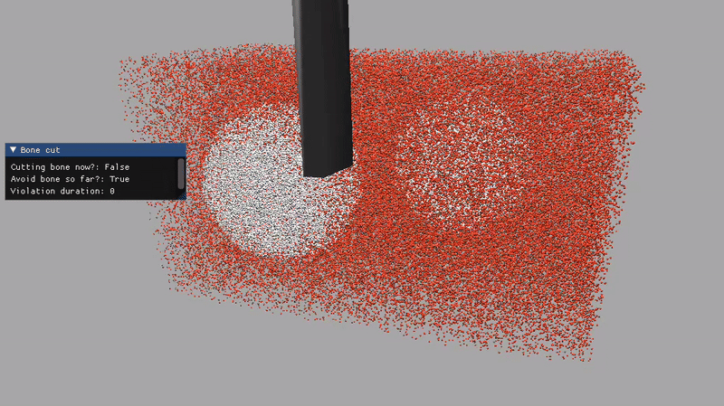
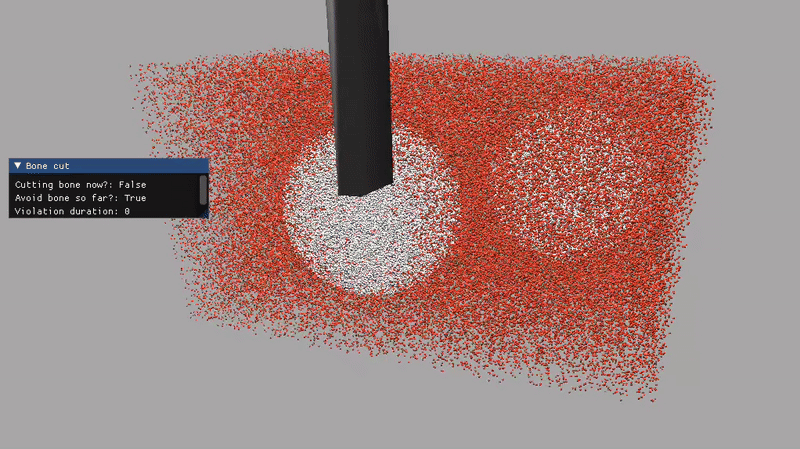
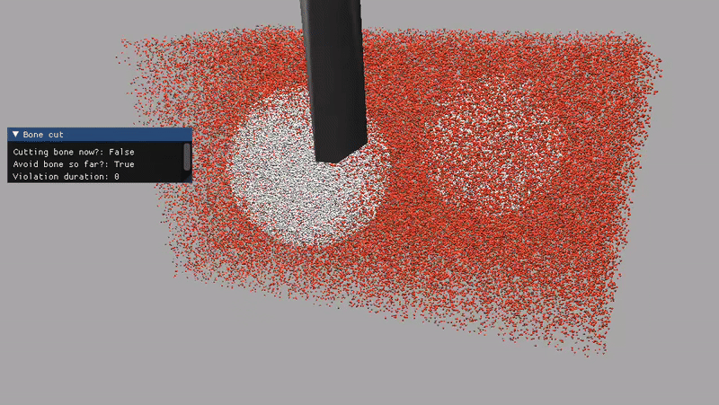
Adaptive w/o Force


Adaptive (Ours)


Real-world Model Cutting
Nominal
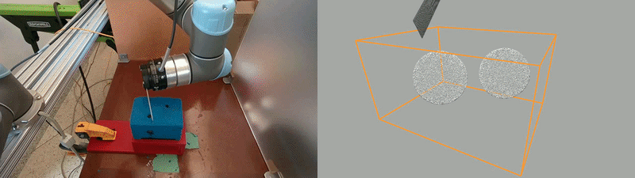
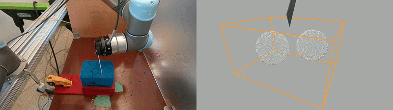
Adaptive w/o Force
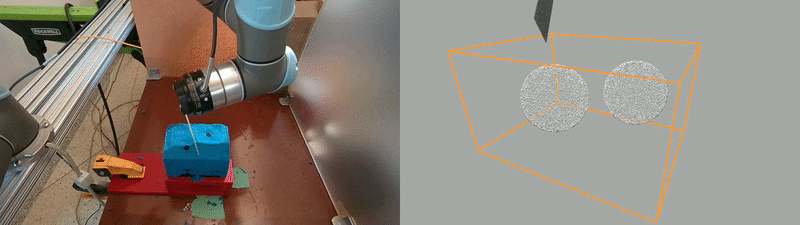
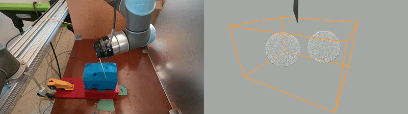
Adaptive (Ours)
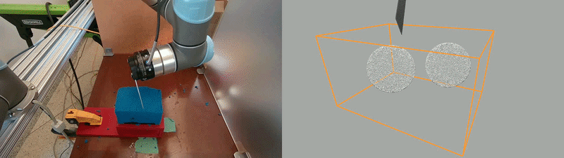
Chicken Shoulder Cutting
Nominal


Nominal Results
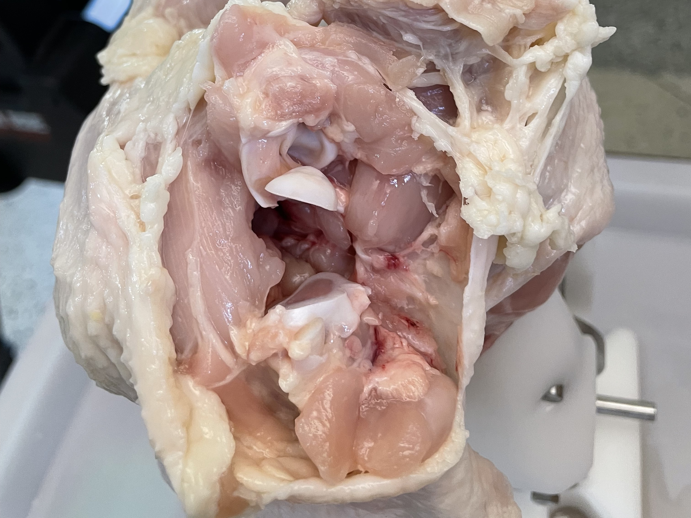
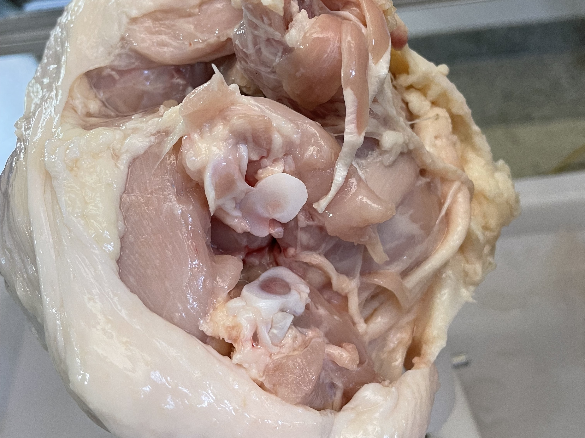
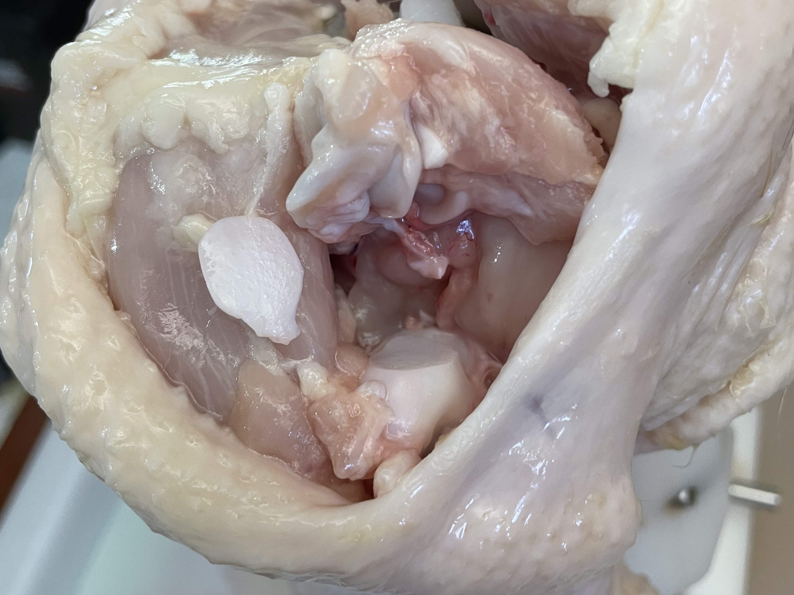
Adaptive (Ours)


Adaptive Results
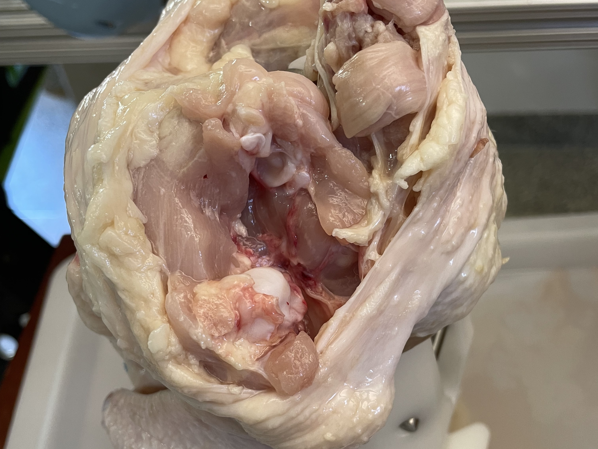
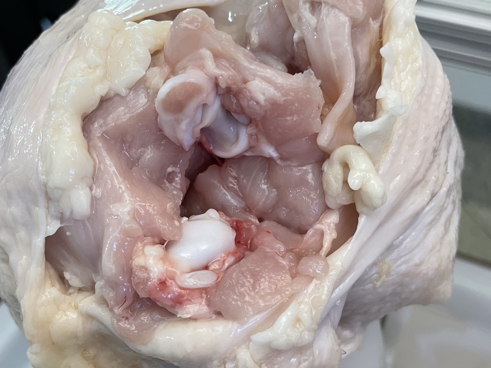
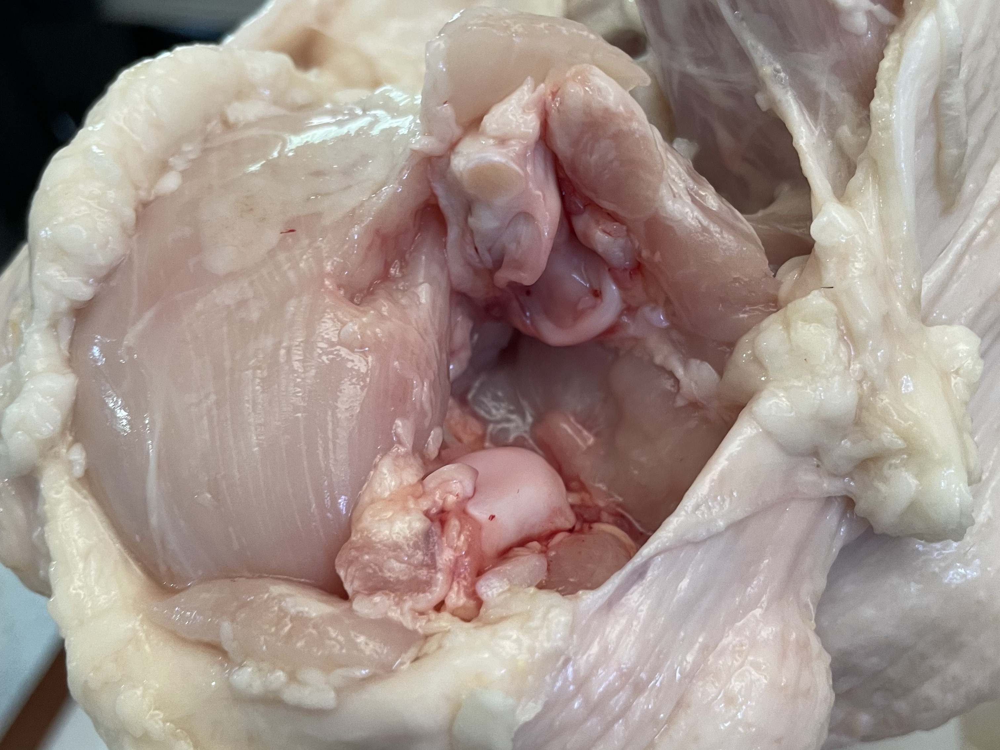
Comparison with Recent Cutting Method

The knife first cuts into the left bone. Because RoboNinja can only adjust its trajectory to one direction (left), it keeps cutting into the left bone.

RoboNinja relies on knife-bone collision for interactive state estimation, which does crucial damage to non-rigid core in our task.
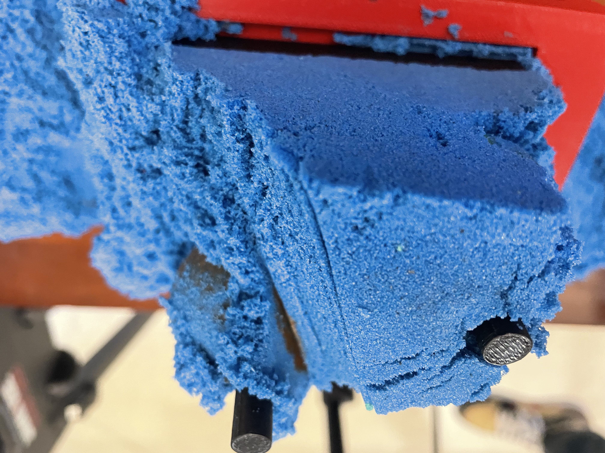
Cutting Result (Back view)
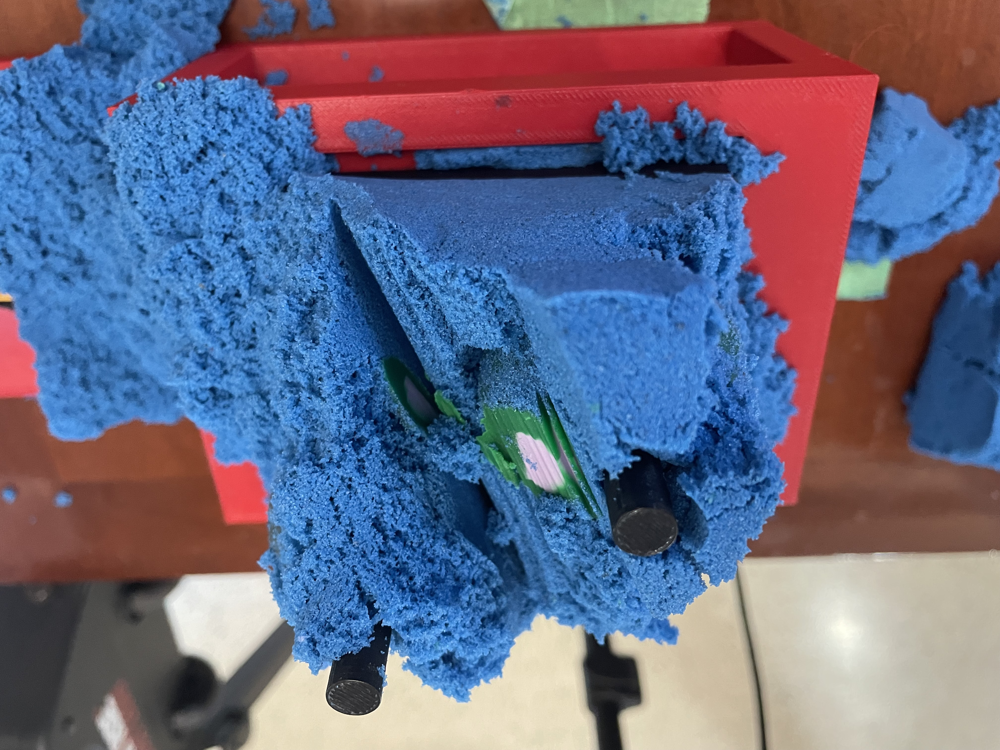
Cutting Result (Back view)
Video
BibTeX
@misc{yang2025automatedchickendeboninglearningbased,
title={Towards Automated Chicken Deboning via Learning-based Dynamically-Adaptive 6-DoF Multi-Material Cutting},
author={Zhaodong Yang and Ai-Ping Hu and Harish Ravichandar},
year={2025},
eprint={2510.15376},
archivePrefix={arXiv},
primaryClass={cs.RO},
url={https://arxiv.org/abs/2510.15376},
}